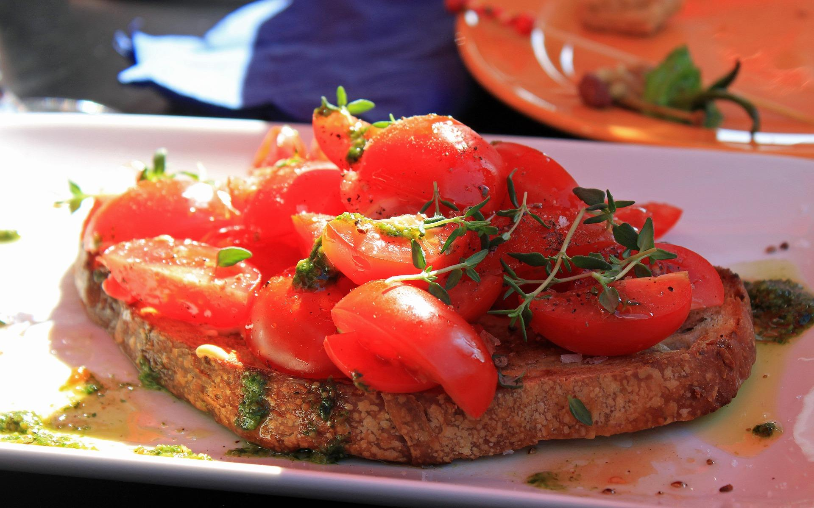

Bruschette

Description
Bruschetta (pronounced brew-SKET-tah) is an Italian dish that starts with a slice of rustic Italian bread brushed with olive oil and grilled over coals until toasted.
Ingredients
- 2 tomatoes, cubed
- 1 teaspoon dried basil
- 4 tablespoons grated Parmesan cheese
- 2 tablespoons olive oil
- 1 clove garlic, crushed
- seasoning salt to taste
- ground black pepper to taste
Steps
- Step 1
In a medium bowl, mix tomatoes, dried basil, Parmesan cheese, olive oil, garlic, seasoning salt and ground black pepper. Cover and chill in the refrigerator 8 hours, or overnight, before serving.